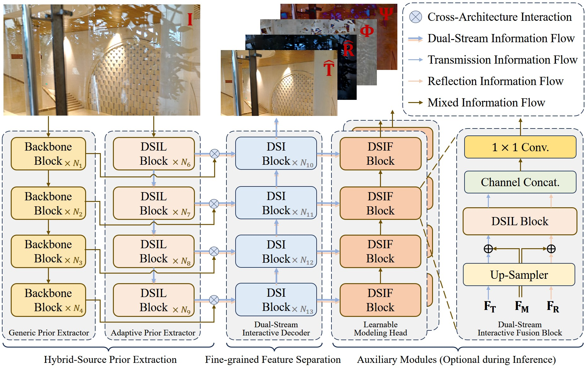
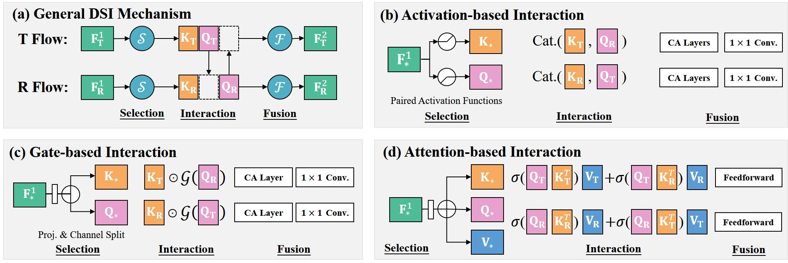
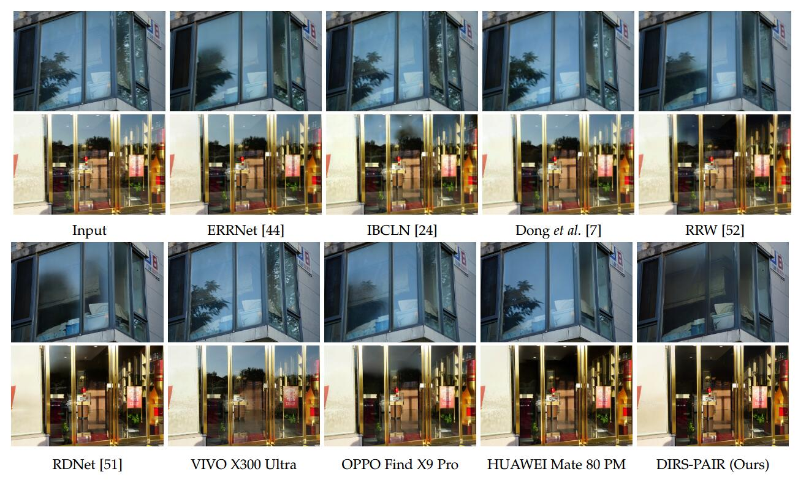
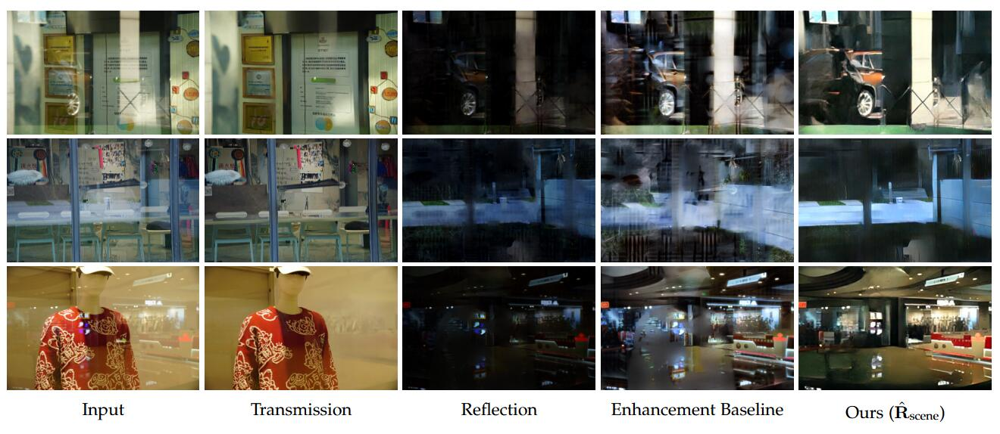
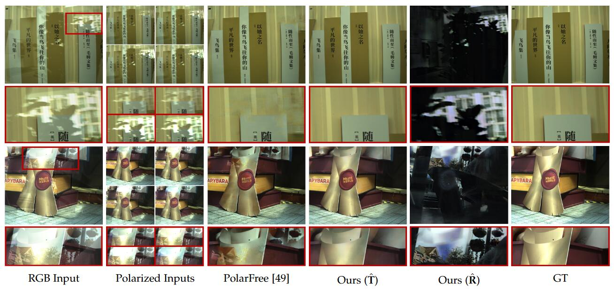

DIRS-YTMT
Activation-based CNN interaction that recycles suppressed features between streams.
Official Project Page
A unified DIRS framework for reflection separation, reflection scene reconstruction, and polarized multi-image reflection separation.
College of Intelligence and Computing, Tianjin University † Corresponding author: xj.max.guo@gmail.com
Abstract
DIRS revisits reflection formation in the sRGB domain and unifies dual-stream architectures under a common interaction paradigm.
Reflection superimposition, resulting from the entanglement of transmission and reflection layers in images, remains a long-standing challenge in computational photography and computer vision due to its inherently ill-posed nature. This work presents a comprehensive framework that advances both the theoretical understanding and practical effectiveness of single-image reflection separation. We begin by surveying and systematically categorizing decades of existing methods, offering an organized taxonomy based on input modalities, prior constraints, and architectural paradigms. Considering the limitations of existing single- and dual-branch models, we introduce a generalized dual-stream interactive architecture that facilitates multi-scale and high-dimensional feature exchange between transmission and reflection pathways. This design unifies activation-based, gate-based, and attention-based interaction mechanisms, and is compatible with both CNN and Transformer backbones. Furthermore, we challenge the conventional linear composition model in the sRGB space and introduce a learnable nonlinear interaction term, which more accurately captures real-world layer blending and substantially improves decomposition fidelity.
Method
Learnable Offset-Residual Superposition handles nonlinear layer coupling, while dual-stream interaction exchanges discriminative evidence across branches.


Activation-based CNN interaction that recycles suppressed features between streams.
Mutually gated CNN interaction for spatially varying nonlinear reflection coupling.
Transformer interaction with dual-stream joint attention and parallel self-attention.
Models
FLOPs and latency are measured on a single NVIDIA RTX 3090 with 256 x 256 inputs. PSNR/SSIM are averaged over Real20 and SIR2.
| Model | Type | Params | FLOPs | Time | PSNR | SSIM |
|---|---|---|---|---|---|---|
| DIRS-YTMT | CNN, activation interaction | 32.42M | 102.91G | 31.35 ms | 24.94 | 0.902 |
| DIRS-MuGI | CNN, mutual gating | 84.47M | 153.98G | 49.95 ms | 25.63 | 0.913 |
| DIRS-PAIR | Transformer, joint attention | 48.80M | 200.22G | 75.36 ms | 26.37 | 0.918 |
| DIRS-PAIR + Nature | Transformer, joint attention | 48.80M | 200.22G | 75.36 ms | 26.95 | 0.926 |
Survey
Decades of reflection removal and separation methods organized by input modality, physical cue, prior constraint, and network paradigm.
Results
DIRS separates strong real-world reflections and extends naturally to reflection scene reconstruction and polarized image reflection separation.



Examples
Drag the divider to inspect the input image against the predicted transmission layer, and the predicted reflection layer against the reconstructed reflection scene.
Citation
Please cite DIRS if this project is useful for your research.
@article{hu2026dirs,
title={Principled Reflection Separation via Nonlinear Superposition and Feature Interaction},
author={Hu, Qiming and Li, Mingjia and Li, Yuntong and Guo, Xiaojie},
journal={arXiv preprint},
year={2026}
}